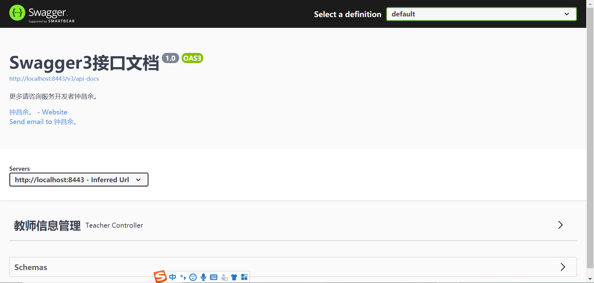

前后端分离的项目，接口文档的存在十分重要。与手动编写接口文档不同，swagger是一个自动生成接口文档的工具，在需求不断变更的环境下，手动编写文档的效率实在太低。与swagger2相比新版的swagger3配置更少，使用更加方便。
<!--添加swagger3依赖-->
<dependency>
<groupId>io.springfox</groupId>
<artifactId>springfox-boot-starter</artifactId>
<version>3.0.0</version>
</dependency>
<!--end-->
@EnableOpenApi
@SpringBootApplication
public class ZcyApplication {
public static void main(String[] args) {
SpringApplication.run(ZcyApplication.class, args);
}
}
package com.psbc.zcy;
import io.swagger.annotations.ApiOperation;
import org.springframework.context.annotation.Bean;
import org.springframework.context.annotation.Configuration;
import springfox.documentation.builders.ApiInfoBuilder;
import springfox.documentation.builders.PathSelectors;
import springfox.documentation.builders.RequestHandlerSelectors;
import springfox.documentation.service.ApiInfo;
import springfox.documentation.service.Contact;
import springfox.documentation.spi.DocumentationType;
import springfox.documentation.spring.web.plugins.Docket;
@Configuration
public class Swagger3 {
@Bean
public Docket createRestApi() {
return new Docket(DocumentationType.OAS_30)
.apiInfo(apiInfo())
.select()
.apis(RequestHandlerSelectors.withMethodAnnotation(ApiOperation.class))
.paths(PathSelectors.any())
.build();
}
private ApiInfo apiInfo() {
return new ApiInfoBuilder()
.title("Swagger3接口文档")
.description("更多请咨询服务开发者钟昌余。")
.contact(new Contact("钟昌余。", "https://github.com/zhongchangyuyu", "rain66_zcy@163.com"))
.version("1.0")
.build();
}
}
@Api：用在请求的类上，表示对类的说明
tags="说明该类的作用，可以在UI界面上看到的注解"
value="该参数没什么意义，在UI界面上也看到，所以不需要配置"
@ApiOperation：用在请求的方法上，说明方法的用途、作用
value="说明方法的用途、作用"
notes="方法的备注说明"
@ApiImplicitParams：用在请求的方法上，表示一组参数说明
@ApiImplicitParam：用在@ApiImplicitParams注解中，指定一个请求参数的各个方面
name：参数名
value：参数的汉字说明、解释
required：参数是否必须传
paramType：参数放在哪个地方
· header --> 请求参数的获取：@RequestHeader
· query --> 请求参数的获取：@RequestParam
· path（用于restful接口）--> 请求参数的获取：@PathVariable
· div（不常用）
· form（不常用）
dataType：参数类型，默认String，其它值dataType="Integer"
defaultValue：参数的默认值
@ApiResponses：用在请求的方法上，表示一组响应
@ApiResponse：用在@ApiResponses中，一般用于表达一个错误的响应信息
code：数字，例如400
message：信息，例如"请求参数没填好"
response：抛出异常的类
@ApiModel：用于响应类上，表示一个返回响应数据的信息
（这种一般用在post创建的时候，使用@RequestBody这样的场景，
请求参数无法使用@ApiImplicitParam注解进行描述的时候）
@ApiModelProperty：用在属性上，描述响应类的属性
package com.psbc.zcy.demo.controller;
import com.alibaba.druid.stat.DruidStatManagerFacade;
import com.psbc.zcy.demo.service.TeacherService;
import com.psbc.zcy.demo.dto.Teacher;
import com.psbc.zcy.demo.common.Result;
import io.swagger.annotations.Api;
import io.swagger.annotations.ApiImplicitParam;
import io.swagger.annotations.ApiOperation;
import org.springframework.beans.factory.annotation.Autowired;
import org.springframework.validation.BindingResult;
import org.springframework.validation.ObjectError;
import org.springframework.web.bind.annotation.*;
import javax.validation.Valid;
import java.util.List;
@Api(tags = "教师信息管理")
@RestController("/Validate") // @RestController = @Controller + @ResponseBody
public class TeacherController {
@Autowired //@Autowired是一种注解，可以对成员变量、方法和构造函数进行标注，来完成自动装配的工作
private TeacherService teacherService;
//获取 Druid 的监控数据
@GetMapping("/api/druid-stat")
@ApiOperation(value = "获取 Druid 的监控数据")
public Object druidStat(){
// DruidStatManagerFacade#getDataSourceStatDataList 该方法可以获取所有数据源的监控数据
// 除此之外 DruidStatManagerFacade 还提供了一些其他方法，我们可以按需选择使用。
return DruidStatManagerFacade.getInstance().getDataSourceStatDataList();
}
// 新增教师信息
@CrossOrigin // 解决跨域问题
@PostMapping("/api/teacher/add")
@ApiOperation(value = "新增一条教师信息",notes = "根据Teacher对象创建用户")
@ApiImplicitParam(name = "teacher", value = "教师详细实体teacher", required = true, dataType = "Teacher")
//@ApiImplicitParam(paramType = "body", dataType = "Teacher", name = "teacher", value = "教师对象", required = true)
public Result add(@RequestBody Teacher teacher) {
return new Result<>(teacherService.addTeacher(teacher));
}
//查询教师信息
@CrossOrigin
@PostMapping("/api/teacher/list")
@ApiOperation(value = "获取教师信息列表",notes = "根据url的q来查询教师信息")
@ApiImplicitParam(paramType = "query", dataType = "String", name = "q", value = "查询值", required = true, example = "钟昌余")
public Result list(@RequestParam String q) throws Exception {
// 1.获得所有教师记录
try {
List<Teacher> allTeacher = teacherService.getAllTeacher(q);
return new Result(allTeacher);
} catch (Exception e) {
return new Result(e);
}
}
//通过教师编号查询教师信息
@CrossOrigin
@PostMapping("/api/teacher/query_teacher_by_t_id")
@ApiOperation(value = "获取教师信息",notes = "根据Teacher对象的tid来查询教师信息")
public Teacher queryTeacherBytId(@RequestBody Teacher teacher) {
return teacherService.getTeacherBytId(teacher);
}
//修改教师信息
@CrossOrigin
@PostMapping("/api/teacher/update_teacher_by_teacher_tid")
@ApiOperation(value = "修改教师信息",notes = "根据Teacher对象的id来修改教师信息")
public Result updateTeacherBytId(@Valid @RequestBody Teacher teacher, BindingResult res) {
System.out.println(teacher);
if(res.hasErrors()) {
for (ObjectError error : res.getAllErrors()) {
System.out.println(error.getDefaultMessage());
return new Result<>(-1, error.getDefaultMessage());
}
}
return new Result<>(teacherService.modifyTeacher(teacher));
}
//通过教师编号tid删除教师信息
@CrossOrigin
@PostMapping("/api/teacher/delete_teacher_by_teacher_id")
@ApiOperation(value = "删除教师信息",notes = "根据Teacher对象的的tid来删除教师信息")
public void deleteTeacherBytId(@RequestBody Teacher teacher) {
teacherService.removeTeacher(teacher);
}
//通过编号id删除教师信息
@CrossOrigin
@DeleteMapping("/api/teacher/delete_teacher_by_id")
@ApiOperation(value = "删除教师信息",notes = "根据url的id来删除教师信息")
public Result deleteById(@RequestParam int id) {
return new Result<>(teacherService.removeTeacherById(id));
}
}

Swagger的访问路径由port/swagger-ui.html改成了 port/swagger-ui/ 或port/swagger-ui/index.html。